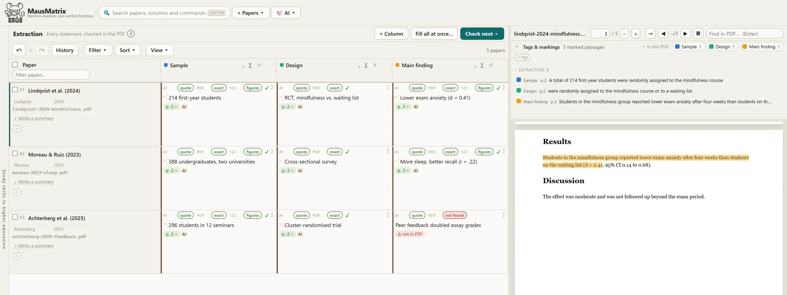
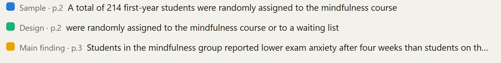
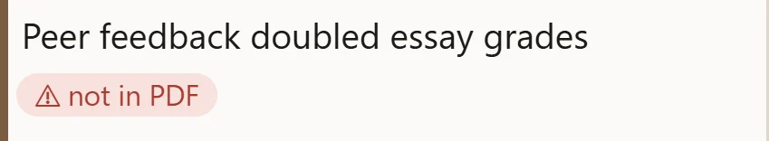

Add your papers
Drop in the PDFs and your reference list. They stay on your machine.
AI reads and extracts
Claude screens and fills the table. Every quote is searched in the real PDF.
You verify
One click jumps to the sentence. Confirm it, correct it, or reject it.




Anchored to the source
Every value comes with a verbatim quote, and the quote is searched in the real PDF. Quotes that cannot be found are flagged for review.
AI assists, you decide
You confirm each statement with one click. Your confirmation is never overwritten by a machine.
Stays on your machine
MausMatrix runs as a single file in your browser. No server, no account. Papers are only sent to the AI model you choose.
Built for systematic reviews and meta-analyses: screening, data extraction, risk of bias and effect sizes, from title and abstract to the full text.
MausMatrix is in active development. Interested in trying it with your research group? Get in touch.
AI-generated results can be wrong. MausMatrix shows the source of every value so you can check it; verifying results and how you use them is your responsibility. AI providers are used under your own accounts and their terms.